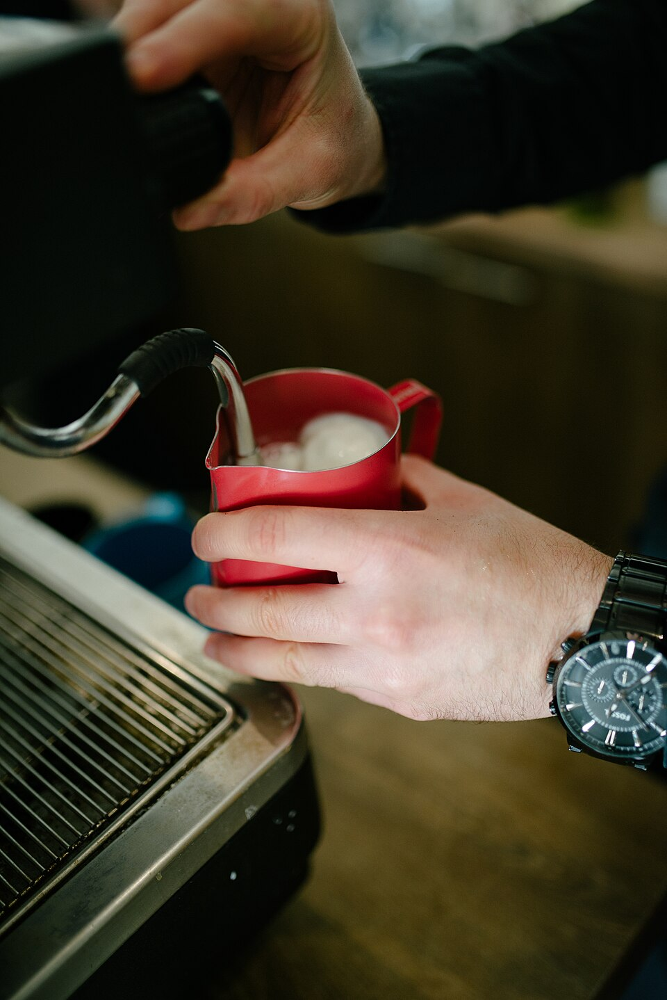
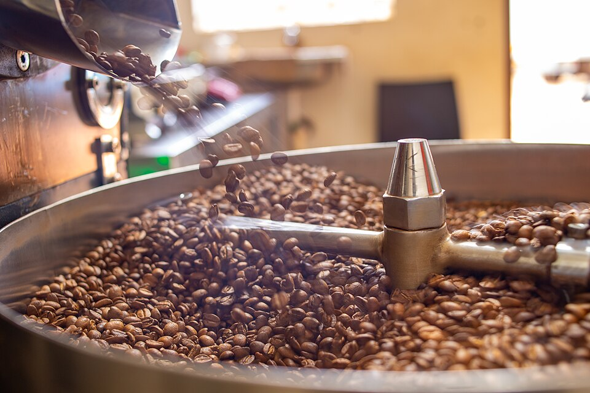
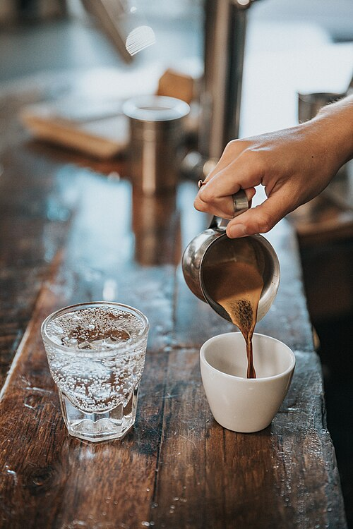

Ristretto de Cajamarca
S/ 9Corto, dulce, notas de panela
Café de especialidad · Barranco
Espresso, filtrados y granos de Cajamarca y Amazonas, preparados frente a ti en una barra de ocho asientos.

01 · Carta
Precios en soles. La carta cambia con cada tueste.

Espresso
Filtrados
Fríos y dulces
02 · Especialidades
Lo que más se pide en la barra.
Corto, dulce, notas de panela

Latte de avena Flat white
Flat white
Café en grano 250 gSomos un equipo pequeño de baristas y tostadores. Compramos café a productores de Cajamarca y Amazonas, lo tostamos aquí cada martes y lo servimos en una barra de ocho asientos, frente a ti.

04 · Galería
El tueste, la barra y el servicio, tal como se ven un martes cualquiera.



05 · Visita

06 · Reservas